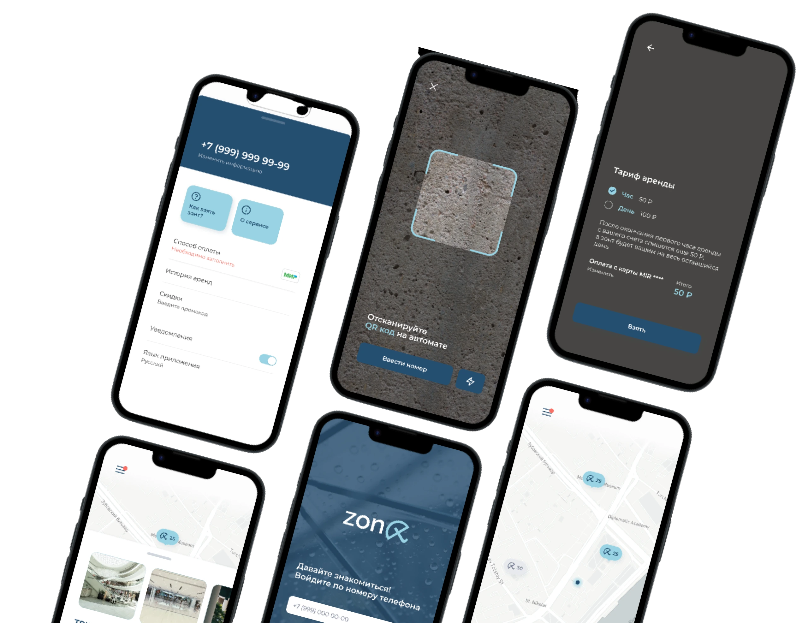
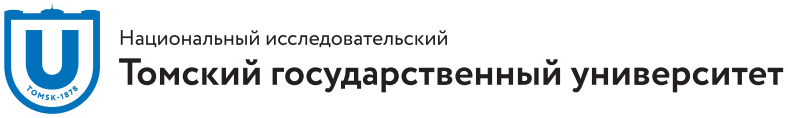

Продуктовым командам
Помогу проработать сценарий в Figma и написать тексты для кнопок, подсказок и инструкций. Например, объяснить, как начать аренду и что произойдёт после оплаты
Junior UX-редактор с навыками прототипирования и исследований
Мой главный принцип — делать продукт понятным и удобным каждому
Спроектировал приложение для проката зонтов, собрал интерактивный прототип в Figma и написал тексты для первой аренды
Открыть кейс
Помогу проработать сценарий в Figma и написать тексты для кнопок, подсказок и инструкций. Например, объяснить, как начать аренду и что произойдёт после оплаты
Помогу сделать понятнее путь ученика или студента. Например, подготовить инструкции для первого входа, поиска расписания и подключения к занятию
Подключусь к обзору литературы, анализу качественных и количественных данных и подготовке материалов, по которым команда сможет обсудить выводы
Мне интересны задачи, где исследование помогает понять, что изменить в интерфейсе и как объяснить следующий шаг пользователю
Институт образования Томского государственного университета
Формулирую исследовательские вопросы, работаю с научными источниками, изучаю методы анализа качественных и количественных данных
Факультет психологии Томского государственного университета
Работал с психодиагностическими методиками и учился интерпретировать результаты измерений

Изучал, как объяснять студентам шаги в онлайн-среде
Освоил основы визуальной иерархии и оформления макетов
Применение генеративного ИИ для исследовательских задач. Работа с источниками, структурирование материалов и проверка ответов модели.
Контакты
Рассматриваю junior-позиции в UX-редактуре и задачи на стыке текстов и исследований